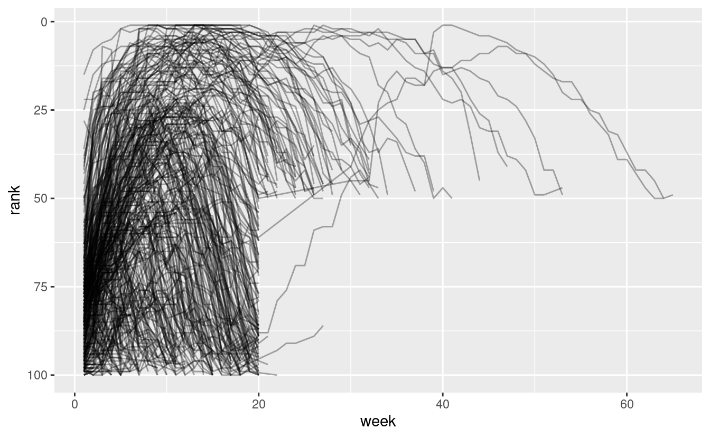
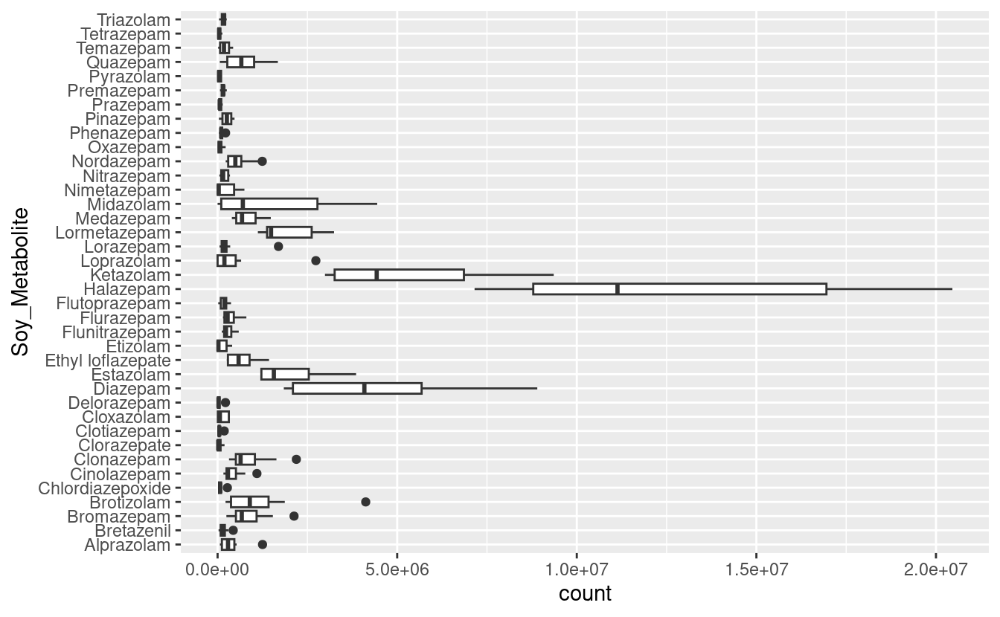

S05E02: R4DS (2e) - Ch. 6 - Tidy Data
Today, we’ll start with the R4DS chapter on “tidy” data, learning what it means for a dataframe to be in a tidy format, and how to reshape untidy into tidy data.
Introduction
Today we will learn about a consistent way to organize your data in R, using a system called “tidy” data.
Then we will cover the primary tool use for tidying data, pivoting. Pivoting allows you to change the form of your data without changing any of the values.
We will again be using tidyverse packages, so we’ll need to load it packages for the current R session using the library() function:
library(tidyverse)
# You should have the tidyverse installed, but if not, do so using:
# install.packages("tidyverse")What is tidy data?
We can represent any dataset in multiple ways. Let us look at the following dataframes, each of which comes is available once you’ve loaded the tidyverse: table1, table2, table3, table4a, and table4b.
Each dataframe (or tibble, as tidyverse-style dataframes are called) shows the same values for four variables: country, year, population, and cases of TB (tuberculosis), but each dataset organizes the values in a different way:
table1
#> # A tibble: 6 × 4
#> country year cases population
#> <chr> <int> <int> <int>
#> 1 Afghanistan 1999 745 19987071
#> 2 Afghanistan 2000 2666 20595360
#> 3 Brazil 1999 37737 172006362
#> 4 Brazil 2000 80488 174504898
#> 5 China 1999 212258 1272915272
#> 6 China 2000 213766 1280428583table2
#> # A tibble: 12 × 4
#> country year type count
#> <chr> <int> <chr> <int>
#> 1 Afghanistan 1999 cases 745
#> 2 Afghanistan 1999 population 19987071
#> 3 Afghanistan 2000 cases 2666
#> 4 Afghanistan 2000 population 20595360
#> 5 Brazil 1999 cases 37737
#> 6 Brazil 1999 population 172006362
#> 7 Brazil 2000 cases 80488
#> 8 Brazil 2000 population 174504898
#> 9 China 1999 cases 212258
#> 10 China 1999 population 1272915272
#> 11 China 2000 cases 213766
#> 12 China 2000 population 1280428583table3
#> # A tibble: 6 × 3
#> country year rate
#> * <chr> <int> <chr>
#> 1 Afghanistan 1999 745/19987071
#> 2 Afghanistan 2000 2666/20595360
#> 3 Brazil 1999 37737/172006362
#> 4 Brazil 2000 80488/174504898
#> 5 China 1999 212258/1272915272
#> 6 China 2000 213766/1280428583table4a
#> # A tibble: 3 × 3
#> country `1999` `2000`
#> * <chr> <int> <int>
#> 1 Afghanistan 745 2666
#> 2 Brazil 37737 80488
#> 3 China 212258 213766
table4b
#> # A tibble: 3 × 3
#> country `1999` `2000`
#> * <chr> <int> <int>
#> 1 Afghanistan 19987071 20595360
#> 2 Brazil 172006362 174504898
#> 3 China 1272915272 1280428583Among these four formats, the one in table1 is easier to work with, certainly inside the tidyverse, because it is “tidy”.
Three rules that make a dataset tidy are:
-
Each variable is a column; each column is a variable.
-
Each observation is a row; each row is an observation.
-
Each value is a cell; each cell is a single value.
An example of a computation with a tidy dataframe
The key advantage of having your data in a tidy format is that it makes it easier to work with: compute summaries, new variables, make plots, etc.
For instance, table1 makes it straightforward to calculate a rate of cases (cases per 10,000 people) using the mutate() function:
# Compute rate per 10,000
table1 |>
mutate(
rate = cases / population * 10000
)
#> # A tibble: 6 × 5
#> country year cases population rate
#> <chr> <int> <int> <int> <dbl>
#> 1 Afghanistan 1999 745 19987071 0.373
#> 2 Afghanistan 2000 2666 20595360 1.29
#> 3 Brazil 1999 37737 172006362 2.19
#> 4 Brazil 2000 80488 174504898 4.61
#> 5 China 1999 212258 1272915272 1.67
#> 6 China 2000 213766 1280428583 1.67Note that mutate() always adds new columns at the end of your dataset – in this case, rate. This function is discussed here in R4DS Chapter 4.
The book also gives two other examples of working with a tidy dataframe, including how to make a plot with ggplot2.
Breakout Rooms 1
(These are the same as Exercises 1 and 2 in R4DS 6.2.1.)
-
Using prose, describe how the variables and observations are organised in each of the sample tables (
table1,table2, etc.). -
Sketch out the process you’d use to calculate the
ratefortable2, and fortable4a+table4b. You will need to perform four operations:
- Extract the number of TB cases per country per year.
- Extract the matching population per country per year.
- Divide cases by population, and multiply by 10000.
- Store back in the appropriate place.
You haven’t yet learned all the functions you’d need to actually perform these
operations, but you should still be able to think through the transformations you’d need.
Pivoting
In the real world, data is often untidy because of two reasons:
-
Data is often organised to facilitate some goal other than analysis.
-
Most people aren’t familiar with the principles of tidy data.
Therefore, untidy data has to be pivot to pivot your data into a tidy form, with variables in the columns and observations in the rows.
Two functions for pivoting data
-
pivot_longer()makes datasets longer by increasing the number of rows, and reducing the number of columns. Typically, we usepivot_longer()to make an untidy dataset tidy, since untidy datasets often have multiple columns for a single variable, and multiple observations in a single row. -
pivot_wider()makes datasets wider by increasing the number of columns, and reducing the number of rows. Typically,pivot_wider()will make a dataset untidy – but that can still be useful, as we’ll see next week.
How does pivoting work?
Let’s start with a very simple dataset to make it easier to see what’s happening:
# Row-wise tibble creation with the 'tribble()' function
df <- tribble(
~var, ~col1, ~col2,
"A", 1, 2,
"B", 3, 4,
"C", 5, 6
)
df
#> # A tibble: 3 × 3
#> var col1 col2
#> <chr> <dbl> <dbl>
#> 1 A 1 2
#> 2 B 3 4
#> 3 C 5 6We can tidy df using pivot_longer():
df |>
pivot_longer(
cols = col1:col2,
names_to = "names",
values_to = "values"
)
#> # A tibble: 6 × 3
#> var names values
#> <chr> <chr> <dbl>
#> 1 A col1 1
#> 2 A col2 2
#> 3 B col1 3
#> 4 B col2 4
#> 5 C col1 5
#> 6 C col2 6It’s easier to see how pivot_longer works if we take it component by component. Let us look at how it works visually using Figure 6.3, Figure 6.4, and Figure 6.5 in the book.
Example with data in column names
This example will work with the billboard dataframe that is loaded along with the tidyverse. This dataset records the billboard rank of songs in the year 2000:
billboard
#> # A tibble: 317 × 79
#> artist track date.ent…¹ wk1 wk2 wk3 wk4 wk5 wk6 wk7 wk8 wk9
#> <chr> <chr> <date> <dbl> <dbl> <dbl> <dbl> <dbl> <dbl> <dbl> <dbl> <dbl>
#> 1 2 Pac Baby… 2000-02-26 87 82 72 77 87 94 99 NA NA
#> 2 2Ge+h… The … 2000-09-02 91 87 92 NA NA NA NA NA NA
#> 3 3 Doo… Kryp… 2000-04-08 81 70 68 67 66 57 54 53 51
#> 4 3 Doo… Loser 2000-10-21 76 76 72 69 67 65 55 59 62
#> 5 504 B… Wobb… 2000-04-15 57 34 25 17 17 31 36 49 53
#> 6 98^0 Give… 2000-08-19 51 39 34 26 26 19 2 2 3
#> 7 A*Tee… Danc… 2000-07-08 97 97 96 95 100 NA NA NA NA
#> 8 Aaliy… I Do… 2000-01-29 84 62 51 41 38 35 35 38 38
#> 9 Aaliy… Try … 2000-03-18 59 53 38 28 21 18 16 14 12
#> 10 Adams… Open… 2000-08-26 76 76 74 69 68 67 61 58 57
#> # … with 307 more rows, 67 more variables: wk10 <dbl>, wk11 <dbl>, wk12 <dbl>,
#> # wk13 <dbl>, wk14 <dbl>, wk15 <dbl>, wk16 <dbl>, wk17 <dbl>, wk18 <dbl>,
#> # wk19 <dbl>, wk20 <dbl>, wk21 <dbl>, wk22 <dbl>, wk23 <dbl>, wk24 <dbl>,
#> # wk25 <dbl>, wk26 <dbl>, wk27 <dbl>, wk28 <dbl>, wk29 <dbl>, wk30 <dbl>,
#> # wk31 <dbl>, wk32 <dbl>, wk33 <dbl>, wk34 <dbl>, wk35 <dbl>, wk36 <dbl>,
#> # wk37 <dbl>, wk38 <dbl>, wk39 <dbl>, wk40 <dbl>, wk41 <dbl>, wk42 <dbl>,
#> # wk43 <dbl>, wk44 <dbl>, wk45 <dbl>, wk46 <dbl>, wk47 <dbl>, wk48 <dbl>, …We will use pivot_longer() to tidy this dataframe:
billboard |>
pivot_longer(
cols = starts_with("wk"),
names_to = "week",
values_to = "rank"
)
#> # A tibble: 24,092 × 5
#> artist track date.entered week rank
#> <chr> <chr> <date> <chr> <dbl>
#> 1 2 Pac Baby Don't Cry (Keep... 2000-02-26 wk1 87
#> 2 2 Pac Baby Don't Cry (Keep... 2000-02-26 wk2 82
#> 3 2 Pac Baby Don't Cry (Keep... 2000-02-26 wk3 72
#> 4 2 Pac Baby Don't Cry (Keep... 2000-02-26 wk4 77
#> 5 2 Pac Baby Don't Cry (Keep... 2000-02-26 wk5 87
#> 6 2 Pac Baby Don't Cry (Keep... 2000-02-26 wk6 94
#> 7 2 Pac Baby Don't Cry (Keep... 2000-02-26 wk7 99
#> 8 2 Pac Baby Don't Cry (Keep... 2000-02-26 wk8 NA
#> 9 2 Pac Baby Don't Cry (Keep... 2000-02-26 wk9 NA
#> 10 2 Pac Baby Don't Cry (Keep... 2000-02-26 wk10 NA
#> # … with 24,082 more rowsPivot longer has the following key arguments:
cols– these are the columns that should be combined into 2 columns, namely:names_to– the name you would like to give to the new column whose values will hold what were the column names in the original dataframevalues_to– the name you would like to give to the new column whose values will hold what were the column valies in the original dataframe.
You can see that we get some NAs after pivoting. In this case, NAs are forced to exist because of the structure of the dataset: that is, they aren’t actual missing values. It would therefore make sense to get rid of them, which we can do with values_drop_na = TRUE:
billboard |>
pivot_longer(
cols = starts_with("wk"),
names_to = "week",
values_to = "rank",
values_drop_na = TRUE
)
#> # A tibble: 5,307 × 5
#> artist track date.entered week rank
#> <chr> <chr> <date> <chr> <dbl>
#> 1 2 Pac Baby Don't Cry (Keep... 2000-02-26 wk1 87
#> 2 2 Pac Baby Don't Cry (Keep... 2000-02-26 wk2 82
#> 3 2 Pac Baby Don't Cry (Keep... 2000-02-26 wk3 72
#> 4 2 Pac Baby Don't Cry (Keep... 2000-02-26 wk4 77
#> 5 2 Pac Baby Don't Cry (Keep... 2000-02-26 wk5 87
#> 6 2 Pac Baby Don't Cry (Keep... 2000-02-26 wk6 94
#> 7 2 Pac Baby Don't Cry (Keep... 2000-02-26 wk7 99
#> 8 2Ge+her The Hardest Part Of ... 2000-09-02 wk1 91
#> 9 2Ge+her The Hardest Part Of ... 2000-09-02 wk2 87
#> 10 2Ge+her The Hardest Part Of ... 2000-09-02 wk3 92
#> # … with 5,297 more rowsThis data is now tidy, but we could make future computations a bit easier by converting the values in the column week (wk1, wk2, etc.) into a number using mutate() and readr::parse_number(). parse_number() is a handy function that will extract the numbers from a string, removing all other characters:
billboard_tidy <- billboard |>
pivot_longer(
cols = starts_with("wk"),
names_to = "week",
values_to = "rank",
values_drop_na = TRUE
) |>
mutate(
week = parse_number(week)
)
billboard_tidy
#> # A tibble: 5,307 × 5
#> artist track date.entered week rank
#> <chr> <chr> <date> <dbl> <dbl>
#> 1 2 Pac Baby Don't Cry (Keep... 2000-02-26 1 87
#> 2 2 Pac Baby Don't Cry (Keep... 2000-02-26 2 82
#> 3 2 Pac Baby Don't Cry (Keep... 2000-02-26 3 72
#> 4 2 Pac Baby Don't Cry (Keep... 2000-02-26 4 77
#> 5 2 Pac Baby Don't Cry (Keep... 2000-02-26 5 87
#> 6 2 Pac Baby Don't Cry (Keep... 2000-02-26 6 94
#> 7 2 Pac Baby Don't Cry (Keep... 2000-02-26 7 99
#> 8 2Ge+her The Hardest Part Of ... 2000-09-02 1 91
#> 9 2Ge+her The Hardest Part Of ... 2000-09-02 2 87
#> 10 2Ge+her The Hardest Part Of ... 2000-09-02 3 92
#> # … with 5,297 more rowsNow we’re in a good position to look at how song ranks vary over time by drawing a plot. The code is shown below and the result is Figure 6.2.
billboard_tidy |>
ggplot(aes(x = week, y = rank, group = track)) +
geom_line(alpha = 1/3) +
scale_y_reverse()

Breakout Rooms 2
In the exercises, you’ll work with some metabolite data from mass spectometry experiments on soybeans attacked by aphids. Specifically, there are 10 peaks from 38 metabolites.
Here’s how you can download and read in that dataset:
# Download the CSV file
file_URL <- "https://raw.githubusercontent.com/biodash/biodash.github.io/master/content/codeclub/S05E02/Metabolite.csv"
download.file(url = file_URL, destfile = "Metabolite.csv")
# Read the CSV file into a dataframe
library(tidyverse)
metabolites <- read_csv("Metabolite.csv")Exercise 1
Pivot the metabolite dataframe to a long, tidy format. The resulting dataframe should pivot all the Peak columns, such that it will have only 3 columns: Soy_Metabolite as before, and the new columns peak_nr and count. Store the result in a new dataframe called metabolites_long.
Bonus: What are the number of rows and columns of metabolites and metabolites_long?
Hints(click here)
- Use the
pivot_longer()function. - You could use
starts_with("Peak")to select all the “Peak” columns. - The Peak column names should go into the new column
peak_nr, and the Peak values should go into the new columncount.
Solution(click here)
metabolites_long <- metabolites |>
pivot_longer(cols = starts_with("Peak"),
names_to = "peak_nr",
values_to = "count")
metabolites_long
#> # A tibble: 380 × 3
#> Soy_Metabolite peak_nr count
#> <chr> <chr> <dbl>
#> 1 Alprazolam Peak1 373291.
#> 2 Alprazolam Peak2 207793.
#> 3 Alprazolam Peak3 96152.
#> 4 Alprazolam Peak4 462212.
#> 5 Alprazolam Peak5 468161.
#> 6 Alprazolam Peak6 1250863
#> 7 Alprazolam Peak7 62486.
#> 8 Alprazolam Peak8 190680.
#> 9 Alprazolam Peak9 530639.
#> 10 Alprazolam Peak10 64183.
#> # … with 370 more rowsBonus: metabolites has 38 rows and 11 columns, whereas metabolites_long has 380 rows and 3 columns:
Exercise 2
Add a column to metabolites_long with the count in units of 1000s by dividing the count column by 1000, and name the new variable count_k.
Take a moment to realize that this is much easier to compute once the data is in a tidy format, and the same is true for the bonus activities below.
Bonus:
-
If you’ve used
group_by()andsummarize()before, try to compute the mean count per metabolite. -
If you’ve made
ggplots before, make a boxplot of metabolite counts, with counts across Peaks along the x-axis, and metabolites along the y-axis.
Hints(click here)
Use the mutate() function similar to the first example with mutate() in this session.
Solution(click here)
metabolites_long |>
mutate(count_k = count / 1000)
#> # A tibble: 380 × 4
#> Soy_Metabolite peak_nr count count_k
#> <chr> <chr> <dbl> <dbl>
#> 1 Alprazolam Peak1 373291. 373.
#> 2 Alprazolam Peak2 207793. 208.
#> 3 Alprazolam Peak3 96152. 96.2
#> 4 Alprazolam Peak4 462212. 462.
#> 5 Alprazolam Peak5 468161. 468.
#> 6 Alprazolam Peak6 1250863 1251.
#> 7 Alprazolam Peak7 62486. 62.5
#> 8 Alprazolam Peak8 190680. 191.
#> 9 Alprazolam Peak9 530639. 531.
#> 10 Alprazolam Peak10 64183. 64.2
#> # … with 370 more rowsBonus 1:
metabolites_long |>
group_by(Soy_Metabolite) |>
summarize(mean_count = mean(count))
#> # A tibble: 38 × 2
#> Soy_Metabolite mean_count
#> <chr> <dbl>
#> 1 Alprazolam 370646.
#> 2 Bretazenil 167582.
#> 3 Bromazepam 865158.
#> 4 Brotizolam 1194049.
#> 5 Chlordiazepoxide 87565.
#> 6 Cinolazepam 428290.
#> 7 Clonazepam 889529.
#> 8 Clorazepate 53912.
#> 9 Clotiazepam 57847.
#> 10 Cloxazolam 144292.
#> # … with 28 more rowsBonus 2:
metabolites_long |>
ggplot() +
geom_boxplot(aes(y = Soy_Metabolite, x = count))
